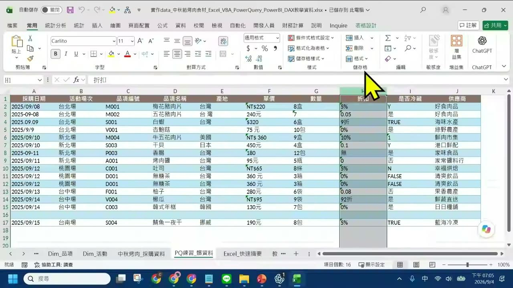
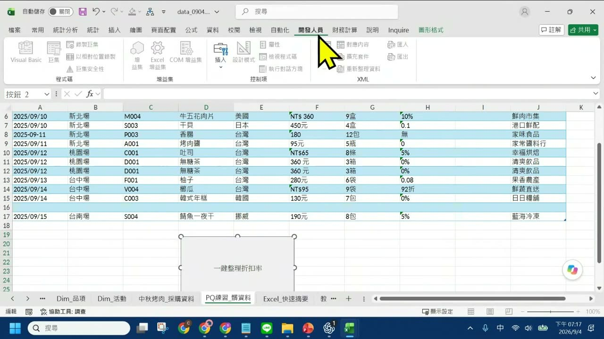
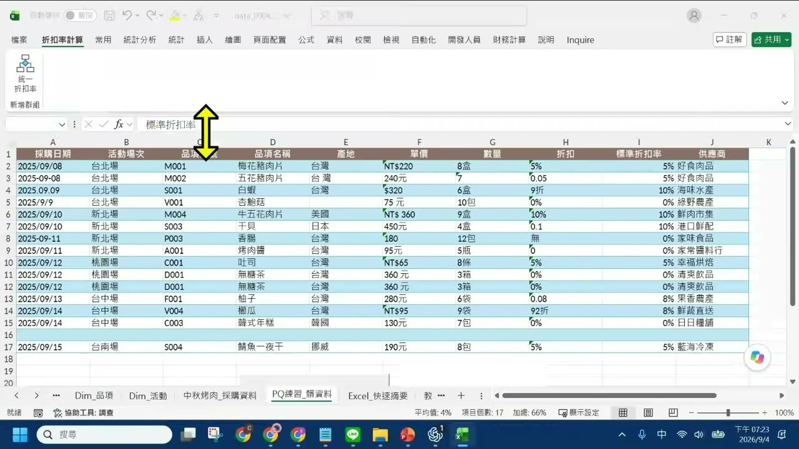
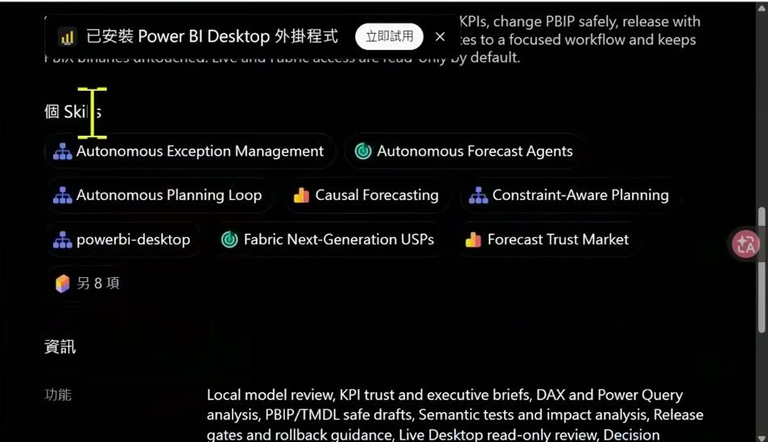
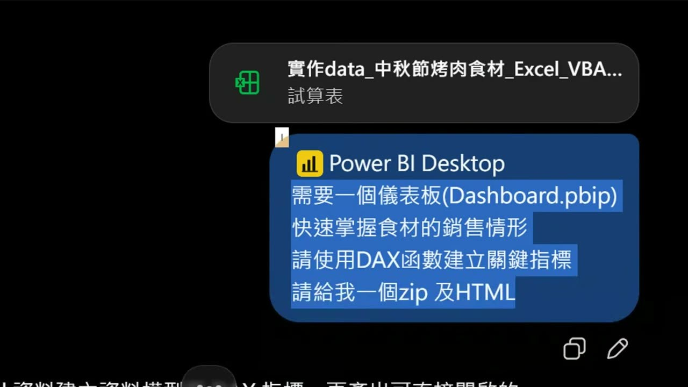
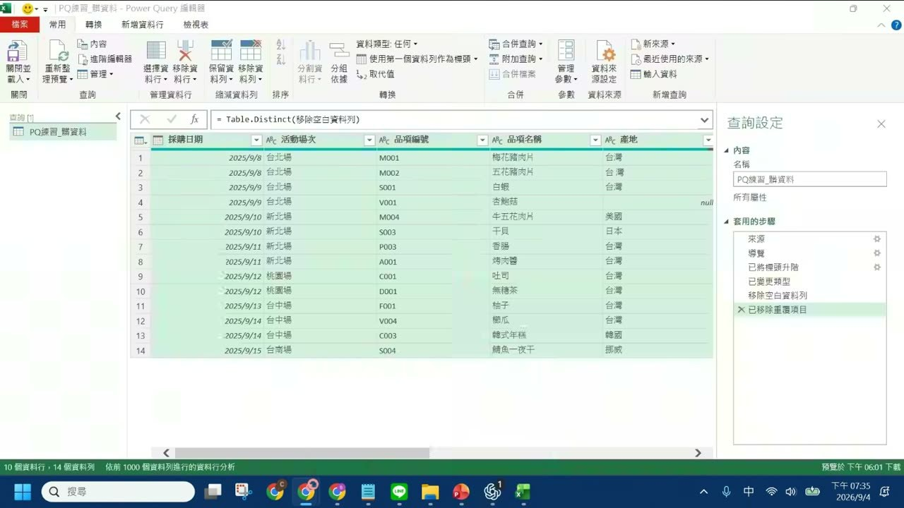
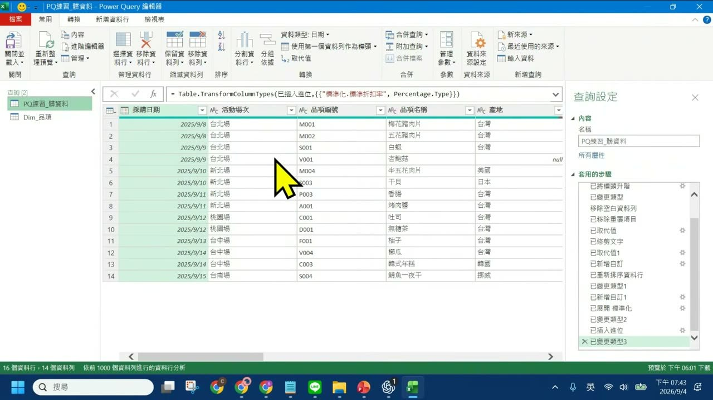
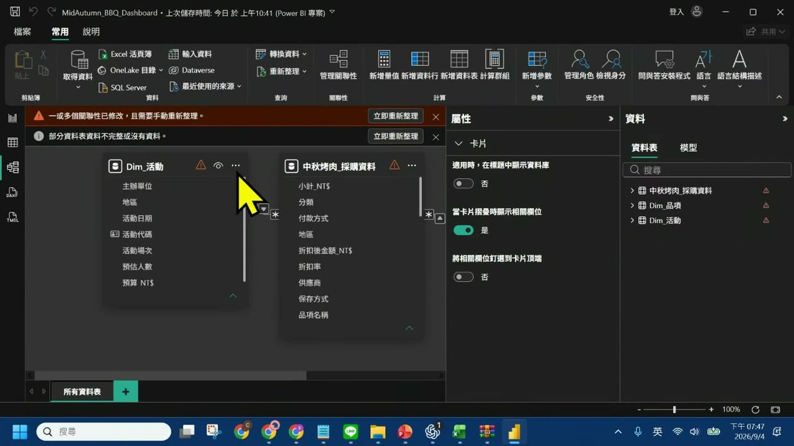

0. 課程資訊與教材
| 課程名稱 | 生成式AI應用電台 EP52｜如何讓 AI 協助完成 Power BI（視覺化） |
|---|---|
| 直播日期 | 2026/09/04（五）19:00–19:50，本段錄影全長 50 分 32 秒 |
| 本堂主題 | 用一份中秋烤肉採購資料，把「手工整理」一路變成巨集、VBA、增益集、Power Query 流程，最後交給 ChatGPT 生成 Power BI 儀表板專案 |
| 課程節奏 | 老師自己說「大概區分成 15 分鐘一個練習」，全堂三段：Excel 自動化（04:00–24:00）、ChatGPT × Power BI（24:00–30:40）、Power Query（30:40–44:00），最後 6 分鐘回頭驗收 AI 生出來的專案 |
| 要先準備 | Excel（要能開啟「開發人員」頁籤）、ChatGPT 帳號（安裝 Power BI Desktop 外掛程式，免付費即可裝）、Power BI Desktop（要支援 .pbip 專案格式） |
📁 課堂用到的兩份教材
錄影、簡報與練習用的 Excel 由電台在課程資料夾中提供給報名學員，本頁不轉載。以下說明兩份檔案各自的內容，方便你對照筆記閱讀。
| 教材檔案 | 課堂上拿來做什麼 |
|---|---|
EP52_如何讓AI協助完成PowerBI(視覺化).pptx | 18 頁課程簡報。第 2 頁列出今晚三個練習，第 4–12 頁是巨集／VBA／增益集的圖解步驟，第 13–17 頁是 Power Query 五步驟，第 18 頁是「ChatGPT 接上 Power BI 後可以做什麼」的功能對照表 |
實作data_中秋節烤肉食材_Excel_VBA_PowerQuery_PowerBI_DAX教學資料.xlsx | 七張工作表的練習資料集。中秋烤肉_採購資料 是 96 筆乾淨交易資料，PQ練習_髒資料 是刻意做壞的 16 筆（空白、重複列、NT$220／240元／8盒 混用），Dim_品項 與 Dim_活動 用來在 Power BI 建一對多關聯。逐表拆解見第 9 章 |
🎬 課堂錄影
單段錄影，全長 50 分 32 秒，涵蓋全部三個練習與最後的 Power BI 專案驗收。
1. 一張圖看懂這堂
整堂只有一條主線：同一份髒資料，被四種不同層級的「自動化」處理過一次。每往右一格，這件事就變得更可重複、更能給別人用。
2. 為什麼一堂 Power BI 課，要從 Excel 講起
開場四分鐘，老師做了一件不太常見的事：把自己這堂課的主角往後挪。
課名叫「如何讓 AI 協助完成 Power BI」，但他一開口就先把期待值調整掉——Power BI 這一段現在很短，因為寫 DAX、生 .pbip 檔這些事，AI 已經能做完。真正會讓你卡住的，是在那之前。
三個練習，各約 15 分鐘
他自己說「我大概區分成 15 分鐘一個練習」。三段的關係不是並列，是遞進——每一段都在回答同一個問題的不同層次：這件事我下次還要再做一遍嗎？
- 練習一 巨集、VBA、增益集——「最近很常有人問我說老師什麼時候要用巨集，什麼時候用 VBA，什麼時候用增益集。」這一段就是在回答這個分工問題。
- 練習二 Power Query——不寫函數、不寫程式，把清理動作變成一份可以重跑的步驟清單。
- 練習三 用 ChatGPT 操作 Power BI——視覺化與 DAX 函數，交給外掛程式生成。
為什麼要拿「中秋烤肉」當練習資料
他準備的不是乾淨的示範檔，是刻意做壞的資料。理由很實際：真實世界的報表就長這樣，而髒資料會直接讓後面整條路走不通。
3. 巨集：把你剛剛點過的每一步錄下來
這一段的目標只有一個欄位：把折扣欄的六種寫法，統一成一個能拿去算的百分比。

PQ練習_髒資料 工作表的 16 筆採購紀錄。看 H 欄「折扣」——同一欄裡混著 5%、0.05、9折、92折、無、0 六種寫法；再看 F 欄「單價」——NT$220、240元、$320、75 元、NT$ 360、180 也全不一樣。第 16 列還是整列空白。這些值在 Excel 眼裡有的是數字、有的是文字，直接加總會得到錯的答案，這就是為什麼不能跳過清理直接進 Power BI。［05:31］第一步不是錄製，是另存檔案
巨集寫在檔案裡，而一般的 .xlsx 不保存程式碼——你錄完關檔，隔天打開就沒了。所以順序是：先轉檔，再錄製。
.xlsm（啟用巨集的活頁簿）。老師的原話是「你一定要把你的 Excel 檔先做一個轉檔的動作，通常要 XLSM 檔它比較適合巨集的方式」。路徑是檔案 → 另存新檔 → 檔案類型選「Excel 啟用巨集的活頁簿」。他順手把檔名改成 data_0904，後面整堂都用這個檔。錄製巨集的六個動作
- 到開發人員頁籤，按錄製巨集。
- 給巨集一個名稱（老師取「統一折扣率」），並在描述欄寫清楚它做什麼——他寫的是「將混合的折扣格式改成標準格式」。儲存在「這個活頁簿」。
- 按確定，Excel 開始錄。從這一刻起你點的每一下都會被記成程式碼，所以不要亂點。
- 在資料右側插入一個新欄位，欄名輸入「標準折扣率」。
- 在第一格輸入轉換公式，向下填滿，再把整欄設成百分比格式、小數位數 0 位。
- 回到開發人員，按停止錄製。
轉換規則：六種寫法怎麼變成一個數字
這張對照表是從課堂畫面上實際跑出來的結果讀出來的（見第 5 章的截圖），也和簡報第 10 頁的「轉換規則範例」一致。
| 原始「折扣」欄 | 轉成「標準折扣率」 | 規則 |
|---|---|---|
5%、10%、0% | 5%、10%、0% | 本來就是百分比，原樣保留 |
0.05、0.1、0.08 | 5%、10%、8% | 小數就是比率，乘 100 顯示成百分比 |
9折 | 10% | 「幾折」講的是付幾成，折扣率＝1－0.9 |
92折 | 8% | 同上，1－0.92 |
無、0、空白 | 0% | 沒有折扣一律歸零，不留空值 |
4. VBA：讓 AI 把錄下來的碼改成能重複跑的程式
錄製出來的巨集能跑，但很笨。這一章是全堂 AI 用得最直接的一段：複製、貼上、要它改寫。
錄製巨集的問題在於它記的是「你點了哪裡」而不是「你想做什麼」。你多點了一下、資料多了兩列，它就會出錯。老師的處理方式很簡單：把碼整段複製，丟給 ChatGPT，要它改成穩定版本。
- 按 ALT ＋ F11 直接進 VBA 編輯器（或從開發人員頁籤點 Visual Basic）。
- 從左側找到剛才錄的那支巨集（工具 → 巨集 → 選「統一折扣率」→ 編輯），把整段程式碼全選複製。
- 貼給 ChatGPT，請它修正並改寫成更完整、更周延的版本。老師的說法是「就是點的，跟你實際執行的，他可能會有一些問題，所以他會幫你做統一的整理、統一的修正」。
- 把 AI 回傳的碼貼回 VBA 編輯器，存檔，按執行。
中秋烤肉資料整理工具.xlam——這時候已經在做第 5 章的增益集了。重點看兩處中文註解：「找出 H 欄最後一筆資料」（用 End(xlUp).Row 自動抓最後一列，不寫死筆數）和「找找看是否已經有『標準折扣率』」（用 Find 判斷欄位存不存在）。這兩件事錄製巨集不會幫你做，卻正是「按第二次不會壞掉」的關鍵。［15:06］畫面上讀得到的關鍵段落如下（只抄畫面清楚可見的部分，右側被裁掉或看不清的行不補寫）：
If foundCell Is Nothing Then … Else … 就是簡報第 11 頁講的「重複按下時，不再重複新增欄位，而是重新整理結果」。判斷欄位在不在、在的話清空重算——差別只在這幾行，但它決定了這支工具能不能給別人用。執行後 Excel 會跳出提示：「折扣率整理完成，共處理 16 筆資料。」老師接著把剛才手動錄的結果整欄刪掉，再按一次 AI 版本，證明它能重跑出一樣的結果。
最後一步：把程式碼藏起來，換成一顆按鈕
他的理由很白話：「我們可能不會想常常看到這個碼。你會說，我常常在這邊會看到這個碼，覺得有點害怕。」所以把它包成按鈕。
- 開發人員 → 插入 → 表單控制項的「按鈕」，在工作表上畫出來。
- Excel 會問要指定哪一支巨集，選「統一折扣率」，按確定。
- 把按鈕文字改成看得懂的名字——老師取的是「一鍵整理折扣率」。

5. 增益集：把工具帶出這個檔案，別人也能用
前面兩章做出來的東西有一個共同限制：換一個檔案就沒了。這一章就是在拆掉那道牆。
老師用一個大家都看過的例子解釋什麼是增益集：Excel「資料」頁籤裡的「資料分析」——那個能一鍵做描述統計的功能，本來就不是 Excel 內建的，而是別人寫好、你安裝上去的增益集。「那如果我想要自己寫，比如說像這樣寫出自己的統計分析，我只要把我的檔案傳給別人，別人就可以去做使用。」
三種副檔名，決定這個工具能走多遠
| 副檔名 | 是什麼 | 能做到什麼 |
|---|---|---|
.xlsx | 一般活頁簿 | 只有資料。存不了巨集，錄完關檔就消失 |
.xlsm | 啟用巨集的活頁簿 | 能存巨集與 VBA，但只有這個檔自己能用。檔案一換、另開一個 Excel，功能就不在 |
.xlam | Excel 增益集 | 裝上去之後每個 Excel 檔都能用，也能傳給別人裝。這才是「工具」 |
怎麼轉成 .xlam，以及裝在哪裡
老師示範了兩條路：一條是檔案 → 另存新檔 → 檔案類型選 Excel 增益集；另一條更乾脆——既然 AI 會寫程式，那就叫它寫一段把自己另存成 .xlam 的碼，直接在 VBA 編輯器裡執行。他選了第二條，「有時候如果你找不到的話，不要灰心，從哪邊改就好了。我們既然可以讓他寫程式，我們直接用程式來改」。
- 存成
.xlam，並把檔案放進 Excel 的增益集固定資料夾：C:\Users\<你的帳號>\AppData\Roaming\Microsoft\AddIns。 - 檔案 → 選項 → 增益集 → 管理「Excel 增益集」→ 執行，在清單裡勾選你的工具（老師的是「中秋烤肉資料整理工具」）。清單裡沒有就按瀏覽手動指過去。
- 要讓它出現在 ribbon 上：檔案 → 選項 → 自訂功能區 → 新增索引標籤，老師建了一個叫「折扣率計算」的頁籤。
- 在新頁籤裡新增群組，從左側命令清單改選「巨集」，找到「統一折扣率」加進去，按確定。
Microsoft\AddIns 資料夾再安裝，而不是直接指向桌面或下載資料夾裡那一份——那些地方的檔案你哪天順手清掉，工具就壞了。要傳給同事時，也是請對方放到同一個位置。
5%／0.05／9折／0.1／無／0／0.08／92折，I 欄全部變成乾淨的 5%、5%、10%、0%、10%、10%、0%、0%、8%、8%。［23:28］.xlam 講成「增益集的檔案格式」，本頁照樣保留。6. 把 Power BI 交給 ChatGPT：外掛、假資料、四行提示詞
課程走到一半，老師先按下暫停：「剛剛 AI 在哪邊幫助我們，那跟今天的主題的 Power BI 有什麼關係呢？」接下來六分鐘，是這堂課的轉折點。
先裝外掛：ChatGPT 的 Power BI Desktop 外掛程式
他提到 ChatGPT 大約半年前更新了外掛程式（Apps／Connectors）機制，Power BI 是其中一個。安裝過程比想像中簡單——不用登入 Power BI 帳號、不用付費、按「立即使用」就能開始用。
- ChatGPT 左側選單點「外掛程式」。
- 搜尋 Power BI，找到
Power BI Desktop。 - 按安裝外掛程式，再按立即使用。
- 之後在對話框按 @（老師講「小老鼠」）就能叫出它。

powerbi-desktop、Causal Forecasting、Autonomous Forecast Agents 等十多項；下方「功能」欄的英文說明才是重點——Local model review、KPI trust and executive briefs、DAX and Power Query analysis、PBIP/TMDL safe drafts。翻成白話：它能讀你的語意模型、幫你寫 DAX 與 Power Query、產出 .pbip 專案草稿。［26:10］對照簡報第 18 頁，這個外掛能做的事被整理成四類：
| 功能 | ChatGPT 可以做什麼 | 實際例子 |
|---|---|---|
| 讀模型 | 看 Tables、Columns、Measures、Relationships | 「這個模型有哪些資料表？」 |
| 寫 DAX | 根據自然語言產生 DAX Query | 「幫我算今年與去年營收成長率」 |
| 查資料 | 真的向 Power BI 模型查詢資料 | 「找出營收最高的前 10 個科別」 |
| 看報表 | 查看頁面、圖表、欄位、篩選器 | 「這份報表目前有哪些視覺化？」 |
上傳資料之前，先想一件事
老師在這裡插進整堂最值得記下來的一段提醒。他沒有把它包裝成「資安宣導」，就是很順的一句實務建議：
四行提示詞，就是全部
他把練習用的 Excel 上傳，用 @ 帶出 Power BI Desktop 外掛，然後只打了四行。

實作data_中秋節烤肉食材_Excel_VBA…（標示為「試算表」），下方藍色訊息框開頭是 Power BI Desktop 外掛標籤，接著就是那四行需求。注意他沒有描述任何圖表長相——沒說要幾張卡片、什麼顏色、放哪裡，只講了「要什麼檔案格式」和「要達成什麼目的」。［29:39］四行各有各的任務，老師在口述裡都交代了理由：
- 指定
.pbip——這是 Power BI 的「專案」格式，跟平常看到的.pbix不一樣。.pbix是打包好的二進位檔，.pbip是拆開成資料夾的專案，AI 才有辦法寫進去、你也才看得懂它寫了什麼。 - 講目的不講畫面 ——「快速掌握食材的銷售情形」是一句業務需求。他要的是讓 AI 自己判斷該放哪些指標。
- 點名要 DAX ——不指定的話 AI 可能只給你圖表，不會建立可重用的量值（Measure）。
- 同時要 zip 和 HTML ——這是老師的小技巧。他的說法是「我需要先看看模式長怎麼樣，就是 HTML 檔，先看看他長怎麼樣」。HTML 可以直接用瀏覽器開，先確認方向對不對，再花時間開 Power BI Desktop。
Dashboard.html 只要一秒，方向錯了可以馬上重講一次需求，不用等它跑完。7. Power Query：整理一次，以後只要按「重新整理」
趁 AI 在背景生成儀表板的空檔，老師回頭補上被跳過的那一段：資料是怎麼清乾淨的。
他形容 Power Query 是「輕量版的 Power BI」：介面幾乎一樣，但它只做一件事——把資料整理成可以分析的樣子。最大的賣點是「不用寫函數，不用寫相關的內容」。
怎麼打開
- Excel 的「資料」頁籤 → 取得資料。
- 選「啟動 Power Query 編輯器」（或「從檔案」匯入外部檔案）。
- 匯入時勾選「選取多重項目」，可以一次挑好幾張工作表。老師先匯入
PQ練習_髒資料。 - 在右側查詢清單點兩下，資料就進到編輯畫面。
五個清理動作，全部靠點選
| 要解決的問題 | 在哪裡點 | 做完會發生什麼 |
|---|---|---|
| 整列空白 | 常用 → 移除資料列 → 移除空白資料列 | 第 16 列那種空殼直接消失 |
| 整列重複 | 常用 → 移除資料列 → 移除重複的項目 | 老師示範的是 9/12 桃園場那兩筆一模一樣的無糖茶 |
| 「臺灣」與「台灣」混用 | 轉換 → 取代值 | 整欄套用規則，不是改一個儲存格 |
| 看不見的前後空白 | 轉換 → 格式 → 修剪 | 「臺灣 」和「臺灣」在報表上長得一樣，實際是兩筆資料——修剪之後才會合併 |
| 單價混著「NT$」「元」「盒」 | 新增資料行 → 自訂資料行 | 建一個乾淨的「標準單價」新欄，再把型態改成整數 |
比較複雜的欄位（數量的「8盒」、折扣的「9折」、是否冷藏的 Y／是／TRUE 混用），他一樣的處理方式：新增自訂資料行，公式請 AI 寫。「這時候公式請 AI 幫你寫，把所有的單價的公式寫好，用 Power Query 的方式。」寫完貼進去按確定，整欄一次算完。
右邊那份「套用的步驟」，才是真正的成品
Power Query 的價值不在某一次清乾淨，而在它把你做過的每一步記成一份清單。下個月拿到新資料，把檔案換掉、按「全部重新整理」，這份清單會從頭再跑一次。

= Table.Distinct(移除空白資料列)——你點的每個按鈕，它都翻成一行 M 語言。左下狀態列：10 個資料行、14 個資料列。［35:30］
Dim_品項，準備做合併查詢）。資料行從 10 個變成 16 個。這份清單就是可以交給別人、也可以明年再跑一次的東西。［43:14］合併查詢：把兩張表接起來
最後一段他做了 PQ練習_髒資料 與 Dim_品項 的合併，順便把 Power BI 的核心觀念先講了。
- 把
Dim_品項也匯入 Power Query。 - 常用 → 合併查詢。上面選主資料表、下面選要接上來的那張。
- 兩張表各點一次「品項編號」欄當作連接點（下面那張要按住 Ctrl 選）。
- 聯結種類選「左方外部（第一個資料表的所有列，第二個資料表相符的列）」。
- 合併後點欄位標題旁的雙箭頭，勾選要展開的欄位（老師選了單位重量_公斤、分類、標準產地、單位）。
做完之後關閉並載入，整理好的資料就回到 Excel 工作表，可以直接交給 Power BI。老師的提醒是「你是不是很怕它東西不見？你就按儲存」——Power Query 的步驟是存在活頁簿裡的，關掉編輯器不會弄丟。
8. 打開 AI 生出來的專案：能用，但不是按一下就完成
最後六分鐘回頭驗收。這一段值得看，因為它沒有剪掉不順的部分。
ChatGPT 交回來的是一個 zip，解開之後有三樣東西：一份 Dashboard.html（瀏覽器直接開的預覽）、一個 Dashboard.pbip 專案（含 Dashboard.Report 資料夾），還有一份 README。老師先開 HTML 確認方向對了——可以按地區、分類、活動場次篩選，數字會跟著動——才去開 Power BI Desktop。
README 的內容（畫面上讀得到的部分，行尾被視窗切掉的地方以 … 標示）：
教學任務與DAX 工作表裡預先設計好的量值幾乎完全對得上（總採購金額、採購筆數、品項數、平均每筆成本、平均單價、預算差異、預算執行率…）。也就是說 AI 光看欄位就推出了跟老師教案一樣的指標設計——這是這堂課裡 AI 表現最好的一段。但打開 Power BI Desktop 之後，還有事要做

中秋烤肉_採購資料、Dim_品項、Dim_活動）都在，欄位也都對——但上方兩條紅／灰色警告條才是重點：「一或多個關聯性已修改，且需要手動重新整理。」「部分資料表資料不完整或沒有資料。」右側資料窗格的三張表旁邊也都掛著驚嘆號。這不是失敗，是正常的收尾工作：AI 給的是架構，資料連線要你自己按一次重新整理。［47:47］.pbip 一個檔出來是打不開的——專案格式是一整個資料夾結構。課堂上有人問這跟 Vibe Coding 有什麼不同（逐字稿誤聽成「Fiver Coding」）。老師的回答很直接：HTML 那份確實就是 Vibe Coding 生出來的網頁，但真正的成果是它背後那個 Power BI 專案——「我們為的是他的背後的 Power BI 的專案，所以大家你可以看一下 Power BI 你就不用重新再建」。
9. 教材資料集拆解：七張工作表各自對應哪個練習
課堂上老師只切到其中兩三張表，其餘沒展開。這一章把整份練習檔攤開，讓你知道自己手上這份 Excel 每張表是幹嘛的。
實作data_中秋節烤肉食材_Excel_VBA_PowerQuery_PowerBI_DAX教學資料.xlsx 與 18 頁簡報，不是錄影內容——所以沒有時間戳。放進來的理由是：你跟著錄影做的時候，畫面上的欄位名稱一閃而過，對照這張表比較不會迷路。七張工作表
| 工作表 | 筆數 | 拿來練什麼 |
|---|---|---|
使用說明 | — | 整份資料集的導覽，含資料性質聲明（教學模擬資料，非實際報價） |
中秋烤肉_採購資料 | 96 筆 | 主力資料表，25 個欄位。可直接載入 Excel、Power Query 與 Power BI。第 6、7、8 章用的都是它 |
PQ練習_髒資料 | 16 筆 | 刻意做壞的版本：前後空白、文字型金額（NT$220／240元）、四種日期格式、Y／是／TRUE 混用、空值與重複列。第 3、7 章的練習對象 |
Dim_品項 | 24 筆 | 品項主檔：編號、標準名稱、分類、標準產地、單位、單位重量、參考單價、保存方式、是否冷藏。用來做合併查詢與星狀模型 |
Dim_活動 | 6 筆 | 活動場次主檔：代碼、場次、地區、日期、預估人數、預算、主辦單位。「預算差異」那個 DAX 指標就是靠它算的 |
Excel_快速摘要 | — | 已算好的 KPI 與分類成本，可以拿來核對自己算得對不對 |
教學任務與DAX | 12 列 | 老師的教案本體：每個工具該練什麼、用哪些欄位、對應哪一條 DAX 公式 |
拿來對答案的一組數字
Excel_快速摘要 這張表已經把答案算好了。你自己跑完 Power Query 或 Power BI 之後，用這幾個數字檢查有沒有算錯：
- 總採購成本 NT$ 104,061.2 ／ 採購筆數 96 筆 ／ 平均單價 NT$ 195.52 ／ 總重量 596 公斤
- 分類成本：海鮮 31,375.3 ＞ 肉類 28,744 ＞ 飲料 14,592.6 ＞ 加工品 11,957.35 ＞ 主食 7,158 ＞ 蔬菜 6,504.35 ＞ 醬料 3,729.6
教材裡預先寫好的 DAX 公式
如果你不想等 AI 生，或想確認 AI 生出來的對不對，教學任務與DAX 這張表把八條量值的完整公式都寫好了：
Dim_活動 的關聯才算得出來。照這個順序練，比隨機查函數有效率得多。簡報裡的四張圖，值得回頭看
- 第 7 頁——巨集／VBA／增益集三者的「用途 × 適合任務」對照，是第 3–5 章最好的複習表。順帶提醒：Office Scripts 與 VBA 不同，本堂以 VBA 為主。
- 第 9 頁——錄製巨集寫法 vs. 手寫 VBA 的並排比較，左邊滿是
.Select與ActiveCell，右邊是Dim ws As Worksheet直接指定範圍。第 4 章那段 AI 改寫，改的就是這件事。 - 第 13–17 頁——Power Query 的五步驟圖解（載入 → 選欄位 → 清理取代 → 確認型態 → 關閉並載入 → 重新整理），跟第 7 章一一對應。
- 第 18 頁——ChatGPT 接上 Power BI 的四類功能對照，就是第 6 章那張表的出處。
10. 這堂課真正在教的事
把 50 分鐘濃縮成四件事。這四件都不是操作步驟，是判斷。
一、決定用哪個工具，看的不是難度，是「這件事你會做幾次」
「什麼時候用巨集、什麼時候用 VBA、什麼時候用增益集」是老師開場說最多人問他的問題，而他給的答案不在功能表裡。做一次就好 → 手動；每週都要做 → 錄成巨集；要穩定重複跑 → 讓 AI 改成 VBA；每個檔案都要用、還要給同事 → 轉成 .xlam 增益集。同一件事在四個層級各有各的成本，選錯不是做不出來，是浪費。
二、AI 在這堂課只負責一件事：把你的動作翻譯成程式碼
整堂 AI 出場四次，做的都是同一件事——VBA 由它改寫、Power Query 的自訂資料行公式由它寫、DAX 量值由它建、儀表板版面由它排。它沒有替你決定「折扣率該怎麼定義」「哪些指標重要」，那些一直是你的工作。看懂這個分工，才不會誤以為把檔案丟給 AI 就會有答案。
三、資料不能上雲端，不代表不能用 AI
「給他假資料，然後你再換成你的真資料，你只是需要他的架構而已」——這句話的價值遠超過它在課堂上佔的 15 秒。AI 生成的是欄位結構、公式與版面，跟資料內容無關；準備一份欄位相同、數字亂填的樣本，拿回架構後在本機換上真資料，公司的資料一筆都沒有離開過。這是很多人以為自己「不能用 AI」時，其實可以走的路。
四、AI 給的是架構，最後一哩路還是你的
這堂課最誠實的一段在最後六分鐘：AI 生出來的 Power BI 專案打開時，跳出兩條警告，關聯要手動重新整理，老師現場等了將近兩分鐘。他沒有跳過，也沒有假裝一次成功。結論不是「AI 不好用」——四行提示詞換來一個含 11 個 DAX 指標的完整專案，這已經省掉一兩個小時；結論是要預期最後有一段收尾要自己做，並且知道那段是什麼（檔案位置別動、按重新整理、看驚嘆號在哪張表）。
11. 老師金句
12. 資料來源與整理說明
| 來源 | 2026/09/04 課堂錄影單段，全長 50 分 32 秒；課程資料夾兩份教材（18 頁簡報＋7 張工作表的練習用 Excel） |
|---|---|
| 整理方式 | 全程本機處理：以場景偵測擷取 86 張關鍵畫面、產生 364 段逐字稿，再依逐字稿手寫章節目錄。第 9 章另外讀取簡報與 Excel 教材檔本身 |
| 時間戳 | 章節標題與引文後方的［mm:ss］對應錄影播放器時間 |
| 整理 | 竹貞（Tarshar 的逐幀筆記專員） |
已知限制，請先看過再引用
- 逐字稿是機器產生的，人名與工具名會聽錯。本頁修正了可以由畫面或上下文確認的錯字（增益集被聽成「爭議集／正義集／登義集」、巨集被聽成「聚集／劇集」、VBA 被聽成「BBA／GBA」、另存新檔被聽成「命存新檔」、Copilot 被聽成「KPI 人」、Vibe Coding 被聽成「Fiver Coding」、驚嘆號被聽成「驚探號」、README 被聽成「Readmeet」、DAX 被聽成「DS／DX」，共 12 類、逾 40 處）；不確定的一律保留原樣，沒有猜測補詞。
- 老師提到「大概 8 月上旬 Microsoft 發布 Power BI 的 Copilot 功能」，這個時間點沒有在畫面上出現、也沒有第二來源可佐證，本頁標為〔待確認〕，引用前請自行查證。
- 老師口述中把「ChatGPT 外掛程式／連接器」與「MCP」混著講，本頁照原話保留他的用詞，另在第 6 章加註兩者不是同一個東西。
- 第 3 章那段「請 AI 寫的折扣轉換公式」沒有收錄原文——老師是直接貼進儲存格、沒有把提示詞念出來，逐字稿裡也沒有完整內容，這裡不補寫。
- 可信度分級：金句章 13 則全部是錄影實錄（僅校正上述聽錯的工具名）；第 4、6、8 章的
.code區塊是從畫面逐字抄下來的，行尾被視窗切掉的地方已用…標示，可能有 OCR 誤差；第 9 章全部取自教材檔本身，不是課堂內容。 - 逐字稿中出現的學員稱呼、提問者暱稱，本頁一律隱去。
- 課堂截圖已裁掉線上教室右側的與會者欄位（原始畫面 1920×1080，只保留左側 1440×810 的螢幕分享區）。本頁 9 張截圖平均約每 5 分鐘一張，比一般每 10 分鐘一張略密——這堂是全程螢幕操作的實作課，少一張就會漏掉一個看不懂的步驟。
- 引用到作業、貼文或簡報之前，請對照錄影原始段落再確認一次。